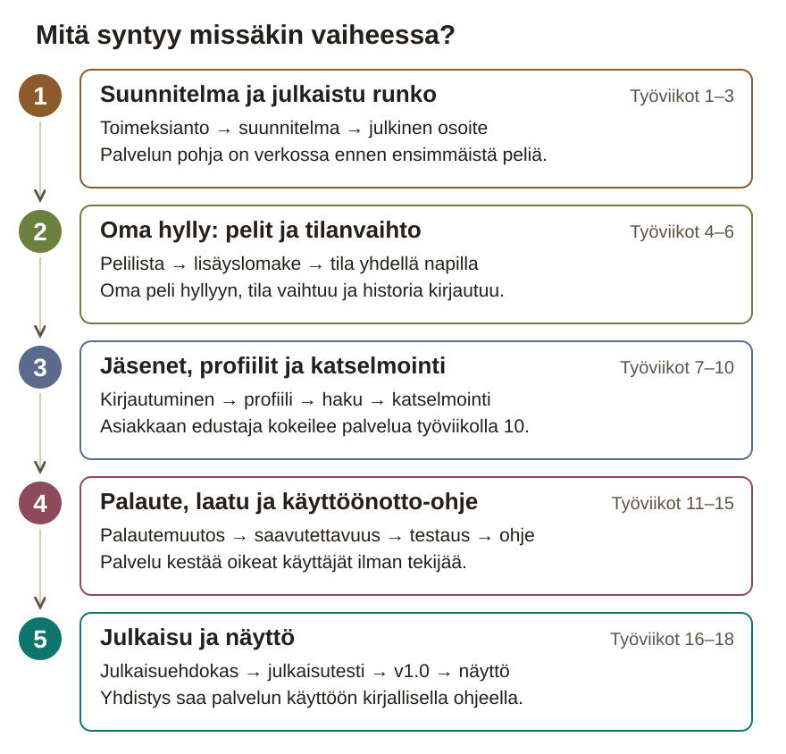

Paperinen työpaketti
Oma pelikirjastopalvelu: React, Express, SQLite ja julkaisu tuotantoon
Työviikot 1–18 · luovutus työviikon 18 lopussa
Tämä paketti on aikataulu ja tarkistuslista tilanteisiin, joissa sivusto ei ole auki. Projektipäiväkirja kirjoitetaan sivustolla ja viedään repositoryn project-docs-kansioon. Rasti tässä vihossa ei ole palautus: työ on aina Git-repositoryssa.
Julkiseen repositoryyn ei laiteta henkilötietoja, salasanoja eikä ympäristömuuttujien arvoja.
Viikot ovat työviikkoja opiskelijan omasta aloituksesta; paketissa ei ole kalenteripäivämääriä.
Rasti tässä vihossa ei ole palautus: työnäyte on aina Git-repositoryssa.
PeliHylly on Pelikellari ry:n jäsenten verkkopalvelu. Jokainen kirjaa palveluun pelinsä laitteineen, tähtiarvioineen ja kommentteineen ja vaihtaa pelin tilaa yhdellä napilla. Julkinen profiili näyttää kenelle tahansa, mitä jäsen pelaa nyt ja miten hänen hyllynsä on muuttunut.

1. Suunnitelma ja julkaistu runko · työviikot 1–3. Puret toimeksiannon kysymyksiksi, teet ohjaajan kuittaaman suunnitelman ja viet tyhjän palvelun julkiseen osoitteeseen. Julkaisu tehdään heti, koska sen ongelmat on halvinta korjata, kun rikottavaa on vähän.
2. Oma hylly: pelit ja tilanvaihto · työviikot 4–6. Rakennat pelilistan tietokannasta, oman lisäyslomakkeen validointeineen ja yhden napin tilanvaihdon, joka kirjaa tilahistorian. Asiakkaan tärkein toive toimii ennen kuin palveluun tulee muita käyttäjiä.
3. Jäsenet, profiilit ja katselmointi · työviikot 7–10. Lisäät rekisteröitymisen, kirjautumisen ja omistajuustarkistuksen, julkisen profiilin sekä haun. Asiakkaan edustaja kokeilee koko polkua työviikolla 10, ja hänen palautteensa ohjaa seuraavaa vaihetta.
4. Palaute, laatu ja käyttöönotto-ohje · työviikot 11–15. Toteutat palautteen tärkeimmän muutoksen ja teet palvelusta puhelimella ja näppäimistöllä toimivan. Testaat kaiken tuotantoa vasten, siistit koodin, arvioit tietoturvan ja kirjoitat käyttöönotto-ohjeen.
5. Julkaisu ja näyttö · työviikot 16–18. Ulkopuolinen testaaja ottaa julkaisuehdokkaan käyttöön pelkän kirjallisen ohjeen avulla. Korjaat estävät virheet, julkaiset v1.0:n ja esittelet työsi näytössä.
Viikon työvaihe on tämän sivuston työohje. Kun työvaihe muuttaa palvelua, kirjaa muutos GitHub-issueksi hyväksymiskriteereineen ja tee se Työtapa-sivun kuudella askeleella. Testin tulos kirjataan testimatriisiin heti, viikon yhteenveto projektipäiväkirjaan viikon lopussa.
| Vko | Ajoitus | Viikon aihe | Vaihe |
|---|---|---|---|
| 1 | Työviikko 1 / 18 | Aloitus | 1 |
| 2 | Työviikko 2 / 18 | Suunnitelma ja tietomalli | 1 |
| 3 | Työviikko 3 / 18 | Julkaistu runko | 1 |
| 4 | Työviikko 4 / 18 | Pelilista tietokannasta | 2 |
| 5 | Työviikko 5 / 18 | Pelin lisäys ja validointi | 2 |
| 6 | Työviikko 6 / 18 | Tilat ja tilahistoria | 2 |
| 7 | Työviikko 7 / 18 | Käyttäjät ja kirjautuminen | 3 |
| 8 | Työviikko 8 / 18 | Profiilisivu | 3 |
| 9 | Työviikko 9 / 18 | Haku ja suodatus | 3 |
| 10 | Työviikko 10 / 18 | Asiakaskatselmointi | 3 |
| 11 | Työviikko 11 / 18 | Palautemuutos | 4 |
| 12 | Työviikko 12 / 18 | Responsiivisuus ja saavutettavuus | 4 |
| 13 | Työviikko 13 / 18 | Testausviikko | 4 |
| 14 | Työviikko 14 / 18 | Laatuviikko | 4 |
| 15 | Työviikko 15 / 18 | Dokumentaatio | 4 |
| 16 | Työviikko 16 / 18 | Julkaisuehdokas ja julkaisutestaus | 5 |
| 17 | Työviikko 17 / 18 | Julkaisu v1.0 | 5 |
| 18 | Työviikko 18 / 18 | Näyttö | 5 |
Palautus viimeistään työviikon 18 lopussa. Sivusto: tehtävien tarkat ohjeet, toteutusavut ja projektipäiväkirja.
Yhteys kokonaisprojektiin: Projekti alkaa toimeksiannosta ja työkaluista, ennen ensimmäistä komponenttia. Tällä viikolla puret toimeksiannon kysymyksiksi ja rakennat ympäristön, jossa työ tallentuu muuallekin kuin omalle koneelle. Kysymysten vastauksista tulee työviikolla 2 suunnitelma, ja sama repository kerää kaikki työnäytteet näyttöön asti.
Viikon tavoite: Ohjaaja avaa repositoryn toisella koneella ja saa sovellusrungon käyntiin pelkän README:n ohjeilla.
Työvaihe 1 / 4 · Pura toimeksianto kysymyslistaksi
project-docs/kysymykset.md vähintään kahdeksan kysymystä, joihin et tiedä vastausta.Valmis kun: project-docs/kysymykset.md sisältää vähintään kahdeksan kysymystä, ja lista on käyty läpi ohjaajan kanssa.
Tallenna työnäyte: project-docs/kysymykset.md repositoryyn. Epäselvät kohdat ja tärkein kysymys työviikon 1 päiväkirjaan.
Työvaihe 2 / 4 · Todenna työkalut ja luo Vite + React -projekti
node -v ja git --version ja kopioi tulosteet työviikon 1 päiväkirjaan.client/, server/ ja project-docs/. Kaikki dokumentaatio menee project-docs-kansioon.client-kansiossa npm create vite@latest ja valitse React.npm install ja npm run dev ja avaa sovellusrunko selaimessa.Valmis kun: Versiotulosteet ovat tallessa, ja npm run dev käynnistää sovellusrungon client-kansiossa.
Tallenna työnäyte: Versiotulosteet työviikon 1 päiväkirjaan. Projektirunko viedään repositoryyn seuraavassa työvaiheessa.
Työvaihe 3 / 4 · Vie projekti etärepositoryyn
README.md: mikä PeliHylly on ja miten sovellusrunko käynnistetään..gitignore, joka estää node_modules-kansion ja .env-tiedostot pääsemästä repositoryyn.git push.Valmis kun: Repository on GitHubissa, README kertoo, mikä projekti on, ja kloonattu kopio käynnistyy README:n ohjeilla.
Tallenna työnäyte: Repositoryn osoite ja ensimmäisen commitin tunniste työviikon 1 päiväkirjaan.
Työvaihe 4 / 4 · Käy julkisen repositoryn tarkistuslista ohjaajan kanssa
Valmis kun: Julkisen repositoryn tarkistuslista on käyty ohjaajan kanssa, ja sopimatta olevat asiat on merkitty avoimiksi.
Tallenna työnäyte: Sovitut asiat suunnitelmaan (Tekijä ja ohjaajan kentät). Tarkistuksen tulos työviikon 1 päiväkirjaan.
Viikon lopputarkistus: Ohjaaja avaa repositoryn osoitteen toisella koneella: README kertoo mikä projekti on, ja npm install && npm run dev käynnistää sovellusrungon. Kysymyslista on project-docs/kysymykset.md-tiedostossa.
Työnäyte Git-repositoryyn ennen rastia: Repositoryn osoite, ensimmäisen commitin tunniste, työkalutodennusten tulosteet ja project-docs/kysymykset.md.
Yhteys kokonaisprojektiin: Työviikon 1 kysymyslista sai vastauksia, ja nyt ne muuttuvat käyttäjätarinoiksi, tietomalliksi ja rajaukseksi. Päätät, mitä tehdään ensin ja miten tieto tallennetaan, koska tilahistoria ja kokoelmat on vaikea lisätä jälkikäteen. Samaa suunnitelmaa vasten rakennat ja tarkistat työtä työviikosta 3 alkaen.
Viikon tavoite: Ohjaaja on kuitannut pakollisen ytimen rajauksen, ja jokaisella sen issuella on hyväksymiskriteerit ja työmääräarvio.
Työvaihe 1 / 4 · Kirjoita käyttäjätarinat ja priorisoi ne ohjaajan kanssa
project-docs/kayttajatarinat.md jokaisesta toiminnosta tarina muodossa ”Jäsenenä haluan…, jotta…”. Käytä työviikon 1 vastauksia.Valmis kun: Jokaisella tarinalla on hyväksymiskriteerit ja prioriteetti, ja ohjaaja on kuitannut pakollisen ytimen (P0) rajauksen issue-kommentissa.
Tallenna työnäyte: project-docs/kayttajatarinat.md repositoryyn. Linkki ohjaajan kuittaukseen ja P0:n ulkopuolelle jääneet tarinat työviikon 2 päiväkirjaan.
Työvaihe 2 / 4 · Piirrä tietomalli, sivukartta ja rautalangat
project-docs/-kansioon.Valmis kun: Tietomallissa näkyvät taulut ja avaimet, ja profiilin rautalanka on niin tarkka, että toteutusta voi verrata siihen työviikolla 8.
Tallenna työnäyte: Tietomallikaavio, sivukartta ja rautalangat kuvina project-docs/-kansioon. Tiivistelmät suunnitelman kenttiin Tietomalli ja Sivukartta.
Työvaihe 3 / 4 · Vertaile tietovarastot ja perustele SQLite
Valmis kun: Suunnitelmassa on vertailu, jossa SQLiteä verrataan omilla kriteereillä vähintään yhteen vaihtoehtoon, ja perustelu sovitulle valinnalle.
Tallenna työnäyte: Vertailu ja perustelu suunnitelman kenttään Tietovarasto ja perustelu. Perustelu omin sanoin työviikon 2 päiväkirjaan.
Työvaihe 4 / 4 · Pilko pakollinen ydin issueiksi ja arvioi työmäärät
Valmis kun: Jokaisella pakollisen ytimen (P0) issuella on hyväksymiskriteerit ja työmääräarvio.
Tallenna työnäyte: Issue-taulun linkki työviikon 2 päiväkirjaan.
Viikon lopputarkistus: Suunnitelma on project-docs/suunnitelma.md-tiedostossa, ohjaaja on kuitannut P0-rajauksen kirjallisesti (issue-kommentti), ja jokaisella P0-issuella on työmääräarvio.
Työnäyte Git-repositoryyn ennen rastia: project-docs/suunnitelma.md, tietomallikaavio, rautalangat, issue-taulu arvioineen ja ohjaajan kirjallinen kuittaus P0-rajauksesta.
Yhteys kokonaisprojektiin: Työviikon 2 sivukartta ja tietomalli muuttuvat nyt koodiksi: reitit vastaavat sivukarttaa, ja migraatioskripti luo tietomallin taulut. Koko putki viedään heti julkiseen osoitteeseen, koska julkaisun ongelmat, kuten ympäristömuuttujat ja SQLiten levypolku, on halvinta korjata, kun rikottavaa on vähän. Samaan osoitteeseen tulevat työviikosta 4 alkaen pelit ja työviikolla 17 versio v1.0.
Viikon tavoite: Kuka tahansa voi avata PeliHyllyn rungon julkisesta osoitteesta, ja /api/health vastaa tuotannossa.
Työvaihe 1 / 4 · Rakenna reitit react-routerilla ja kirjoita k2-muistio
project-docs/k2-muistio.md: mitä React ratkaisee (komponentit, tila, renderöinti), mitä ei (reititys, palvelin, tietovarasto) ja mitä siitä seuraa PeliHyllylle.client-kansioon ja kirjaa riippuvuus perusteluineen k2-muistioon.client/src/sivut/ ja reitit tiedostoon App.jsx. Sisällöksi riittää paikanpitäjä.Valmis kun: Kolme reittiä toimii navigaatiosta, ja k2-muistio kertoo omin sanoin, miksi reititys tarvitsee erillisen kirjaston.
Tallenna työnäyte: project-docs/k2-muistio.md ja reitit commitilla repositoryyn.
Työvaihe 2 / 4 · Pystytä Express-palvelin ja tietokannan skeema
server-kansioon Express-projekti ja tiedosto server/index.js, joka käynnistää palvelimen./api/health, joka palauttaa version ja tietokantayhteyden tilan. Kokeile sitä selaimessa.server/db.js, joka avaa SQLite-tietokannan. Lue tietokannan polku ympäristömuuttujasta.server/migrate.js, joka luo työviikon 2 tietomallin taulut eli tietokannan skeeman ja tulostaa, montako taulua syntyi.Valmis kun: /api/health vastaa paikallisesti, ja migraatio luo tietomallin taulut tyhjään tietokantaan.
Tallenna työnäyte: server/-kansion tiedostot commitilla repositoryyn. Migraation tuloste työviikon 3 päiväkirjaan.
Työvaihe 3 / 4 · Vertaile julkaisualustat ja julkaise runko
client-kansiossa npm run build ja tarkista, että Express tarjoilee client/dist-kansion./api/health puhelimella mobiiliverkossa.Valmis kun: Julkinen osoite näyttää navigoitavan rungon, ja /api/health vastaa tuotannossa.
Tallenna työnäyte: Julkaisulokin kuvakaappaus project-docs/-kansioon, osoite README:hen ja alustojen vertailu työviikon 3 päiväkirjaan.
Työvaihe 4 / 4 · Lähetä asiakkaalle tilannekatsaus
project-docs/viestit.md. Kirjaa vastaanottajasta vain rooli, ei nimeä.Valmis kun: Tilannekatsaus on lähetetty ja tallennettu project-docs/viestit.md-tiedostoon.
Tallenna työnäyte: project-docs/viestit.md commitilla repositoryyn.
Viikon lopputarkistus: Julkinen osoite näyttää navigoitavan rungon, /api/health vastaa tuotannossa, ja tilannekatsausviesti on lähetetty ja tallennettu project-docs/viestit.md-tiedostoon.
Työnäyte Git-repositoryyn ennen rastia: Julkinen osoite, julkaisuloki tai kuvakaappaus, k2-muistio ja tilannekatsausviesti project-docs/viestit.md-tiedostossa.
Yhteys kokonaisprojektiin: Työviikon 3 tyhjät reitit saavat nyt sisällön. Sama tietokanta, jonka migraatio loi, tarjoillaan oman rajapintareitin kautta React-komponenteille, ja virhetilat käsitellään heti. Lukuyhteys on pohja, jonka päälle työviikolla 5 tulee pelin lisäys.
Viikon tavoite: Käyttäjä näkee pelilistan tietokannasta, ja jos palvelin on alhaalla, hän saa selkeän virheilmoituksen tyhjän sivun sijaan.
Työvaihe 1 / 4 · Tee siemendata ja pelilistan rajapintareitti
server/seed.js, joka lisää tietokantaan omat esimerkkipelisi. Kirjoita pelit itse, älä kopioi ulkopuolista tietokantaa.sqlite3-kyselyllä, että pelit ovat tietokannassa.GET /api/games, joka lukee pelit tietokannasta ja palauttaa ne JSON-muodossa.Valmis kun: GET /api/games palauttaa siemendatan pelit tietokannasta.
Tallenna työnäyte: Siemendataskripti ja reitti commitilla repositoryyn.
Työvaihe 2 / 4 · Rakenna pelilista komponenteista omalla fetch-hookilla
usePelit(), joka hakee pelit useEffectin ja fetchin avulla ja palauttaa datan, lataustilan ja virheen.Valmis kun: Pelilista näkyy tuotannossa tietokannan datasta, ja jokaisella komponentilla on yksi vastuu.
Tallenna työnäyte: Komponentit ja hookki commitilla. Vastuunjako omin sanoin työviikon 4 päiväkirjaan.
Työvaihe 3 / 4 · Käsittele lataus-, virhe- ja tyhjä tila
response.ok ja palauta virhe, jos palvelin vastaa virheellä.Valmis kun: Kun palvelin on alhaalla, sivu näyttää virheilmoituksen eikä jää tyhjäksi. Molemmista tiloista on kuvakaappaus.
Tallenna työnäyte: Kuvakaappaukset normaali- ja virhetilasta project-docs/-kansioon ja muutokset commitilla.
Työvaihe 4 / 4 · Kirjaa ja aja testitapaukset T01 ja T02
project-docs/testimatriisi.md, jossa on sarakkeet tunnus, luokka, askeleet, odotettu tulos, toteutunut tulos ja viikko.Valmis kun: Testimatriisissa ovat testitapaukset T01 ja T02: odotettu tulos kirjattuna ennen ajoa ja toteutunut tulos ajon jälkeen.
Tallenna työnäyte: project-docs/testimatriisi.md commitilla. Odotetut ja toteutuneet tulokset lyhyesti työviikon 4 päiväkirjaan.
Viikon lopputarkistus: Lista renderöityy tuotannossa tietokannan datasta; kun API on alhaalla, sivu näyttää virheilmoituksen eikä jää tyhjäksi; molemmista kuvakaappaus.
Työnäyte Git-repositoryyn ennen rastia: Commitit, kuvakaappaus normaali- ja virhetilasta sekä testikirjaukset T01–T02.
Yhteys kokonaisprojektiin: Työviikolla 4 pelejä vain luettiin, nyt niitä myös kirjoitetaan. Rakennat lomakkeen itse ja tarkistat syötteet sekä selaimessa että palvelimella, koska rajapintaa voi kutsua suoraan selaimen ohi. Tähtiarviot ja kommentit syntyvät lomakkeen kenttinä, ja samaa lomaketta käytetään myöhemmin pelin muokkaukseen.
Viikon tavoite: Jäsen lisää pelin tähtiarvioineen ja kommentteineen, ja virheellinen syöte hylätään kentittäisellä viestillä myös suorassa kutsussa.
Työvaihe 1 / 4 · Rakenna pelin lisäyslomake itse
Valmis kun: Lomake toimii näppäimistöllä, jokainen kenttä on kytketty labeliinsa, ja validointisäännöt on kirjattu taulukkoon ennen koodia.
Tallenna työnäyte: Validointisääntötaulukko project-docs/-kansioon ja lomake commitilla repositoryyn.
Työvaihe 2 / 4 · Toteuta pelin lisäys ja palvelinvalidointi
POST /api/games, joka tallentaa pelin tietokantaan ja palauttaa lisätyn pelin.{ nimi: "…" }.Valmis kun: Tyhjä pyyntö curlilla saa vastaukseksi virhekoodin 400 ja virhelistan, ja onnistunut lisäys tallentuu tietokantaan.
Tallenna työnäyte: curl-tulosteet project-docs/-kansioon ja reitti commitilla repositoryyn.
Työvaihe 3 / 4 · Näytä virheviestit kenttien vieressä
aria-describedby-attribuutilla.Valmis kun: Virheviesti näkyy oikean kentän vieressä sekä selaimen että palvelimen hylkäämässä pyynnössä, ja viesti on kytketty kenttään.
Tallenna työnäyte: Muutokset commitilla ja kuvakaappaus kentittäisistä virheviesteistä project-docs/-kansioon.
Työvaihe 4 / 4 · Kirjaa ja aja testitapaukset T03–T05
Valmis kun: Testitapaukset T03–T05 on kirjattu odotuksineen ennen ajoa, ja toteutuneet tulokset on kirjattu matriisiin.
Tallenna työnäyte: project-docs/testimatriisi.md commitilla. Validointisäännöt ja curl-ajon havainnot työviikon 5 päiväkirjaan.
Viikon lopputarkistus: Tyhjä nimi, ylipitkä nimi ja onnistunut lisäys käyttäytyvät ennalta kirjatun odotuksen mukaan sekä selaimessa että suoralla API-kutsulla (curl-tuloste talteen).
Työnäyte Git-repositoryyn ennen rastia: Commitit, validointisääntötaulukko, curl-tulosteet ja testikirjaukset T03–T05.
Yhteys kokonaisprojektiin: Työviikolla 5 peli saatiin hyllyyn, nyt se saa elämän. Työviikon 2 tietomallin tilahistoriataulu otetaan käyttöön, ja tilojen nimet testataan käytännössä. Kun tilanvaihto toimii, profiili voi työviikolla 8 koota historiasta jäsenen tilastot.
Viikon tavoite: Jäsen vaihtaa pelin tilan yhdellä napilla, ja jokainen muutos näkyy pelin tilahistoriassa.
Työvaihe 1 / 4 · Määrittele pelin tilat ja sallitut siirtymät
Valmis kun: Suunnitelmassa ovat tilojen nimet ja siirtymätaulukko, jossa jokainen estetty siirtymä on perusteltu.
Tallenna työnäyte: Siirtymätaulukko project-docs/-kansioon ja päivitetty project-docs/suunnitelma.md commitilla.
Työvaihe 2 / 4 · Toteuta tilanvaihto, joka kirjaa historiarivin samassa transaktiossa
games-taulun tila ja lisää status_history-tauluun vanha tila, uusi tila ja aikaleima samassa transaktiossa.Valmis kun: Tilanvaihto ja historiarivi tallentuvat yhdessä, ja epäonnistunut vaihto ei jätä voimaan tilaa eikä riviä.
Tallenna työnäyte: Reitti commitilla repositoryyn. Miten varmistit transaktion, työviikon 6 päiväkirjaan.
Työvaihe 3 / 4 · Lisää tilanappi, tilahistoria ja pelaan parhaillaan -merkintä
Valmis kun: Tilan vaihto yhdellä napilla näkyy heti pelin sivulla ja historiassa, ja pelaan parhaillaan -merkintä tallentuu.
Tallenna työnäyte: Muutokset commitilla ja kuvakaappaus pelin sivusta historioineen project-docs/-kansioon.
Työvaihe 4 / 4 · Kirjaa ja aja testitapaus T06 tietokantaa vasten
sqlite3-komennolla ennen tilanvaihtoa ja tallenna tuloste.Valmis kun: Testitapaus T06 on kirjattu odotuksineen ennen ajoa, ja kyselyn tulosteet ennen ja jälkeen todistavat yhden täsmäävän historiarivin.
Tallenna työnäyte: project-docs/testimatriisi.md commitilla. sqlite3-tulosteet ennen ja jälkeen työviikon 6 päiväkirjaan.
Viikon lopputarkistus: Tilan vaihto näkyy heti pelin sivulla, ja status_history-taulussa on rivi, jonka aikaleima ja vanha→uusi tila täsmäävät; suora tietokantakysely liitetty päiväkirjaan.
Työnäyte Git-repositoryyn ennen rastia: Commitit, siirtymätaulukko, sqlite3-kyselyn tuloste ennen ja jälkeen sekä T06.
Yhteys kokonaisprojektiin: Työviikoilla 4–6 kuka tahansa pystyi muokkaamaan mitä tahansa. Nyt pelit saavat omistajan, ja aiemmat muokkausreitit suojataan omistajuustarkistuksella. Kirjautuminen on edellytys julkiselle profiilille, jonka rakennat työviikolla 8.
Viikon tavoite: Jäsen rekisteröityy ja kirjautuu, ja vain pelin omistaja voi muokata peliä, myös suoralla rajapintakutsulla.
Työvaihe 1 / 4 · Vertaile istunto ja token ohjaajan kanssa
Valmis kun: Vertailumuistiossa ovat omat kriteerit, päätös ja ohjaajan kommentti.
Tallenna työnäyte: Vertailumuistio project-docs/-kansioon ja päätös project-docs/suunnitelma.md-tiedostoon commitilla.
Työvaihe 2 / 4 · Toteuta rekisteröityminen salasanan hashilla
users-taululle: käyttäjänimi, salasanan hash, sähköposti ja valinnainen profiilikuva.POST /api/users validointeineen samaan tapaan kuin työviikon 5 lomakkeessa.Valmis kun: Rekisteröityminen toimii, ja tietokannassa ja lokeissa näkyy vain salasanan hash.
Tallenna työnäyte: Muutokset commitilla ja tietokantatarkistuksen tuloste työviikon 7 päiväkirjaan.
Työvaihe 3 / 4 · Toteuta kirjautuminen ja suojaa muokkausreitit
POST /api/login, joka vertaa salasanaa hashiin. Virheviesti ei paljasta, oliko väärin tunnus vai salasana.Valmis kun: Vain kirjautunut omistaja voi muokata peliään. Kirjautumaton pyyntö saa virhekoodin 401 ja toisen käyttäjän pyyntö virhekoodin 403.
Tallenna työnäyte: Muutokset commitilla. Suojattujen reittien lista työviikon 7 päiväkirjaan.
Työvaihe 4 / 4 · Kirjaa ja aja testitapaukset T07 ja T08
Valmis kun: Testitapaukset T07 ja T08 on ajettu, ja curl-tuloste näyttää virhekoodin 403 toisen käyttäjän peliin.
Tallenna työnäyte: project-docs/testimatriisi.md ja curl-tulosteet commitilla. Tulokset työviikon 7 päiväkirjaan.
Viikon lopputarkistus: Toisen käyttäjän pelin muokkausyritys palauttaa 403 (curl-tuloste talteen); tietokannassa ja lokeissa ei näy selväkielistä salasanaa; vertailumuistiossa on ohjaajan kommentti.
Työnäyte Git-repositoryyn ennen rastia: Vertailumuistio ohjaajan kommentilla, commitit, curl-tulosteet sekä T07–T08.
Yhteys kokonaisprojektiin: Työviikkojen 6 ja 7 tilahistoria ja käyttäjät saavat nyt näyteikkunan. Profiili kokoaa saman datan koosteiksi, jotka vierailijakin näkee ilman tunnuksia, ja toteutusta verrataan työviikon 2 rautalankaan. Kun jäsenillä on profiilit, työviikon 9 haku auttaa löytämään pelejä kasvavasta hyllystä.
Viikon tavoite: Vierailija avaa jäsenen profiilin ilman tunnuksia ja näkee, mitä jäsen pelaa nyt, tilastot tiloittain ja laitteittain sekä tilahistorian.
Työvaihe 1 / 4 · Toteuta profiilin kooste SQL-kyselyillä
/api/users/:nimi/profiili.Valmis kun: Koostereitti palauttaa tilastot, ja luvut täsmäävät käsin ajettuun tarkistuskyselyyn.
Tallenna työnäyte: Reitti commitilla ja tarkistuskyselyn tuloste työviikon 8 päiväkirjaan.
Työvaihe 2 / 4 · Rakenna profiilisivu itse rautalangan mukaan
/kayttaja/:nimi react-routerin parametrilla ja lue nimi sivulla.Valmis kun: Profiilisivu aukeaa osoitteesta /kayttaja/<nimi>, ja tuntematon nimi näyttää selkeän viestin.
Tallenna työnäyte: Muutokset commitilla ja kuvakaappaus profiilisivusta project-docs/-kansioon.
Työvaihe 3 / 4 · Tarkista profiili vierailijana
Valmis kun: Vierailija näkee profiilin tilastoineen yksityisessä ikkunassa, ja luvut täsmäävät tietokantaan.
Tallenna työnäyte: Kuvakaappaus vierailijanäkymästä project-docs/-kansioon ja vertailun tulos työviikon 8 päiväkirjaan.
Työvaihe 4 / 4 · Vertaa profiilia rautalankaan ja aja testitapaus T09
Valmis kun: Rautalanka ja toteutus ovat rinnakkain poikkeamineen, ja testitapaus T09 on ajettu.
Tallenna työnäyte: Rinnakkaiskuva project-docs/-kansioon, T09 project-docs/testimatriisi.md-tiedostoon ja poikkeamat perusteluineen työviikon 8 päiväkirjaan.
Viikon lopputarkistus: Vierailija näkee profiilin tilastoineen yksityisessä selainikkunassa, ja tilastoluvut täsmäävät tietokannan tarkistuskyselyyn; rautalankavertailu on päiväkirjassa.
Työnäyte Git-repositoryyn ennen rastia: Kuvakaappaus ja rautalanka rinnakkain, commitit, tarkistuskyselyn tuloste, T09 sekä ketju 1:n kirjaus, jos aito bugi osui tälle viikolle.
Yhteys kokonaisprojektiin: Työviikon 8 profiili näytti, että pelejä kertyy nopeasti. Nyt pelilista saa haun ja suodatuksen, jotka tehdään tietokantakyselyssä eikä selaimen muistissa. Samalla tuot toisen ulkoisen komponentin ja kirjaat kokoelmien päätöskriteerit, jotta asiakas voi työviikolla 10 kokeilla koko palvelua.
Viikon tavoite: Jäsen löytää pelin nimen, laitteen ja tilan mukaan, ja haku ilman osumia kertoo, miten pääsee takaisin koko listaan.
Työvaihe 1 / 4 · Toteuta haku ja suodatus parametrisoiduilla kyselyillä
GET /api/games parametrit nimi, laite ja tila.Valmis kun: Suodatus toimii kyselyparametreilla suoraan rajapinnasta, eikä hakuun syötetty SQL muuta kyselyä.
Tallenna työnäyte: Muutokset commitilla ja esimerkkikutsut tuloksineen työviikon 9 päiväkirjaan.
Työvaihe 2 / 4 · Rakenna suodatusnäkymä ja tyhjän tuloksen tila
Valmis kun: Suodatus ”NES + pelattu läpi” palauttaa samat rivit käyttöliittymässä ja suorassa kutsussa, ja tyhjä haku näyttää viestin ja nollausnapin.
Tallenna työnäyte: Kuvakaappaus käyttöliittymän ja suoran kutsun rinnakkaisista tuloksista project-docs/-kansioon ja muutokset commitilla.
Työvaihe 3 / 4 · Valitse ja ota käyttöön toinen ulkoinen komponentti
project-docs/-kansioon ja päätös suunnitelman kenttään Toinen ulkoinen komponentti.Valmis kun: Komponentti toimii palvelussa, ja perustelumuistiossa ovat vertailu, valinta ja arvio itse tekemisen työmäärästä.
Tallenna työnäyte: Perustelumuistio project-docs/-kansioon, päätös project-docs/suunnitelma.md-tiedostoon ja asennus commitilla.
Työvaihe 4 / 4 · Kirjaa kokoelmien kriteerit ja aja testitapaukset T10 ja T11
Valmis kun: Kokoelmien päätöskriteerit ovat suunnitelmassa, ja testitapaukset T10 ja T11 on ajettu.
Tallenna työnäyte: project-docs/suunnitelma.md ja project-docs/testimatriisi.md commitilla. Kriteerit työviikon 9 päiväkirjaan.
Viikon lopputarkistus: Suodatus ”NES + pelattu läpi” palauttaa vain oikeat rivit sekä käyttöliittymässä että suoralla API-kutsulla; haku ilman osumia näyttää tyhjän tilan viestin; perustelumuistio ulkoisesta komponentista ja kokoelmien päätöskriteerit ovat repositoryssa.
Työnäyte Git-repositoryyn ennen rastia: Commitit, perustelumuistio ulkoisesta komponentista, API-kutsun ja käyttöliittymän rinnakkaiset tulokset, T10–T11 sekä laajennuspäätöksen kriteerikirjaus.
Yhteys kokonaisprojektiin: Vaiheet 2 ja 3 on rakennettu omien oletusten varassa. Nyt asiakkaan edustaja käyttää julkaistua palvelua itse koko polun rekisteröitymisestä toisen jäsenen profiiliin. Hänen havainnoistaan johdetaan vaiheen 4 työjärjestys ja työviikon 11 palautemuutos.
Viikon tavoite: Asiakkaan edustaja on kokeillut julkaistua palvelua itse, ja hänen havaintonsa ovat priorisoituina issueina.
Työvaihe 1 / 4 · Valmistele katselmointirunko ja demopolku
Valmis kun: Katselmointimuistiossa ovat demopolku, loppukysymykset ja julkaistun version tunniste.
Tallenna työnäyte: Katselmointimuistion runko project-docs/-kansioon commitilla.
Työvaihe 2 / 4 · Pidä katselmointi, jossa asiakas käyttää palvelua itse
Valmis kun: Muistiossa ovat rooli, ajankohta ja vähintään viisi asiakkaan havaintoa hänen omilla sanoillaan.
Tallenna työnäyte: Katselmointimuistio project-docs/-kansioon commitilla.
Työvaihe 3 / 4 · Erota havainnot tulkinnasta ja priorisoi palaute yhdessä
Valmis kun: Jokaisella havainnolla on erillinen tulkinta ja yhdessä sovittu päätös.
Tallenna työnäyte: Päivitetty katselmointimuistio commitilla. Yllättävin havainto työviikon 10 päiväkirjaan.
Työvaihe 4 / 4 · Päivitä issuet ja lähetä asiakkaalle yhteenveto
project-docs/viestit.md. Kirjaa vastaanottajasta vain rooli.Valmis kun: Jokaisesta sovitusta muutoksesta on issue, ja yhteenveto on lähetetty ja tallennettu.
Tallenna työnäyte: Issue-taulun linkki työviikon 10 päiväkirjaan ja project-docs/viestit.md commitilla.
Viikon lopputarkistus: Katselmointimuistiossa on vähintään viisi asiakkaan havaintoa hänen omilla sanoillaan erillään omasta tulkinnasta, ja issueissa on niistä johdetut priorisoidut tehtävät.
Työnäyte Git-repositoryyn ennen rastia: Katselmointimuistio (rooli, ajankohta ja lainaukset), päivitetty issue-taulu ja yhteenvetoviesti.
Yhteys kokonaisprojektiin: Työviikon 10 palaute muuttuu nyt koodiksi. Teet tärkeimmän muutoksen omassa haarassa ja yhdistät sen pääversioon pull requestilla, ja samalla suunnitelman arviot testataan toteumaa vasten. Kokoelmapäätös ratkaisee, mitä vaiheen 4 loppuviikoilla rakennetaan.
Viikon tavoite: Asiakkaan tärkein toive on muutettu palveluun, ja muutos on tuotannossa pull requestin kautta.
Työvaihe 1 / 4 · Valitse palautteen tärkein muutos ja kirjaa kriteerit
Valmis kun: Issuessa ovat viittaus asiakkaan havaintoon, hyväksymiskriteerit ja työmääräarvio.
Tallenna työnäyte: Issue GitHubissa. Valinnan perustelu työviikon 11 päiväkirjaan.
Työvaihe 2 / 4 · Toteuta muutos omassa haarassa pienin commitein
feature/…, esimerkiksi feature/tilanappi-ensisijaiseksi.Valmis kun: Muutos on omassa haarassa kuvaavasti nimetyin commitein, ja hyväksymiskriteerit on tarkistettu.
Tallenna työnäyte: Haara ja commitit repositoryssa. Testitulokset project-docs/testimatriisi.md-tiedostoon.
Työvaihe 3 / 4 · Yhdistä muutos pääversioon pull requestilla
Valmis kun: Pull requestissa ovat kuvaus, viittaus palautteeseen ja katselmointikommentti, ja muutos on tuotannossa.
Tallenna työnäyte: Pull requestin linkki työviikon 11 päiväkirjaan.
Työvaihe 4 / 4 · Päivitä suunnitelma ja tee kokoelmapäätös
suunnitelma.md ja korvaa repositoryn vanha tiedosto.project-docs/viestit.md.Valmis kun: Suunnitelman muutosvertailu (diff) näyttää päivitetyt arviot ja kokoelmapäätöksen perusteluineen, ja asiakasviesti on tallennettu.
Tallenna työnäyte: project-docs/suunnitelma.md ja project-docs/viestit.md commitilla.
Viikon lopputarkistus: PR:ssä on kuvaus, viittaus palautteeseen ja katselmointikommentti; muutos on tuotannossa; suunnitelman muutosvertailu (diff) näyttää päivitetyt arviot.
Työnäyte Git-repositoryyn ennen rastia: Pull requestin linkki ja commit-historia, suunnitelman diff kirjattuine kokoelmapäätöksineen sekä asiakasviesti.
Yhteys kokonaisprojektiin: Kaikki näkymät ovat nyt olemassa, ja palautemuutos on tehty. Ennen testausviikkoa viimeistelet ne laitteille ja käyttötavoille, joita et itse käytä kehittäessäsi: puhelimelle ja pelkälle näppäimistölle. Työviikolla 13 koko palvelu testataan tässä kunnossa tuotantoa vasten.
Viikon tavoite: Jäsen lisää pelin puhelimella ja pelkällä näppäimistöllä, ja Lighthouse-luvut ennen ja jälkeen näyttävät, mikä parani.
Työvaihe 1 / 4 · Päätä taitekohdat ja korjaa näkymät puhelimelle
Valmis kun: Keskeiset näkymät toimivat puhelimella ilman vaakavieritystä, ja taitekohdat on perusteltu suunnitelmassa.
Tallenna työnäyte: Lighthouse-raportit ennen ja kuvakaappaukset puhelimelta project-docs/-kansioon, taitekohdat suunnitelmaan ja CSS commitilla.
Työvaihe 2 / 4 · Korjaa näppäinpolku ja fokus
Valmis kun: Rekisteröityminen ja pelin lisäys onnistuvat pelkällä näppäimistöllä, ja fokus näkyy koko ajan.
Tallenna työnäyte: Korjaukset commitilla ja näppäintestauksen löydökset työviikon 12 päiväkirjaan.
Työvaihe 3 / 4 · Tarkista kontrastit, tekstivastineet ja otsikot
Valmis kun: Kontrastit täyttävät vaatimuksen, ja jokaisella kentällä ja merkityksellisellä kuvalla on tekstivastine.
Tallenna työnäyte: Korjaukset commitilla ja tarkistuslistan tulos työviikon 12 päiväkirjaan.
Työvaihe 4 / 4 · Aja Lighthouse uudelleen ja testitapaus T12
Valmis kun: Lighthouse-raportit ennen ja jälkeen on tallennettu, jokainen ero on selitetty, ja testitapaus T12 on ajettu.
Tallenna työnäyte: Lighthouse-raportit project-docs/-kansioon, T12 project-docs/testimatriisi.md-tiedostoon ja luvut työviikon 12 päiväkirjaan.
Viikon lopputarkistus: Pelin lisäys onnistuu puhelimella ja pelkällä näppäimistöllä; Lighthouse-saavutettavuus on kirjattu ennen ja jälkeen, ja jokainen korjaus on selitetty omin sanoin.
Työnäyte Git-repositoryyn ennen rastia: Kuvakaappaukset laitteelta, Lighthouse-raportit ennen ja jälkeen, commitit sekä T12.
Yhteys kokonaisprojektiin: Työviikkojen 4–12 aikana testimatriisiin kertyi yksittäisiä testitapauksia. Nyt matriisi täydennetään ja ajetaan ensimmäistä kertaa kokonaisuutena tuotantoa vasten, ja löydökset korjataan täydellisinä ketjuina. Matriisi on turvaverkko, jota vasten koodia siistitään työviikolla 14.
Viikon tavoite: Koko testimatriisi on ajettu tuotantoversiota vasten, ja löydökset on korjattu täydellisinä ketjuina regressiotestiin asti.
Työvaihe 1 / 4 · Täydennä testimatriisi kolmeen luokkaan
Valmis kun: Matriisissa on vähintään 12 testitapausta kolmessa luokassa, ja jokaisella on odotettu tulos ennen ajoa. Koko projektissa tapauksia on vähintään 14, sillä testitapaus T14 ajetaan työviikolla 16.
Tallenna työnäyte: project-docs/testimatriisi.md commitilla.
Työvaihe 2 / 4 · Aja koko matriisi tuotantoversiota vasten
Valmis kun: Matriisin jokaisella rivillä on odotettu ja toteutunut tulos tuotantoversiosta.
Tallenna työnäyte: project-docs/testimatriisi.md commitilla ja epäonnistuneiden tapausten määrä työviikon 13 päiväkirjaan.
Työvaihe 3 / 4 · Korjaa löydökset virheenkorjausketjuina
Valmis kun: Vähintään yksi täydellinen virheenkorjausketju on viety regressiotestiin asti tällä viikolla.
Tallenna työnäyte: Ketju 2 project-docs/testimatriisi.md-tiedostoon ja korjauscommitit repositoryyn.
Työvaihe 4 / 4 · Aja testitapaus T13 katkenneella verkolla
Valmis kun: Testitapaus T13 on ajettu ja kirjattu, ja mahdollinen poikkeama on korjattu ketjuna.
Tallenna työnäyte: project-docs/testimatriisi.md commitilla.
Viikon lopputarkistus: Vähintään 12 testitapausta on kirjoitettu ja ajettu työviikkoon 13 mennessä: matriisin jokaisella rivillä on odotettu tulos (kirjattu ennen ajoa) ja toteutunut tulos. Vähintään yksi täydellinen ketju on viety regressiotestiin asti tällä viikolla.
Työnäyte Git-repositoryyn ennen rastia: Testimatriisi tuloksineen, ketjukirjaukset ja korjauscommitit.
Yhteys kokonaisprojektiin: Työviikon 13 testimatriisi antaa turvaverkon. Nyt koodia voi siistiä ja todistaa regressioajolla, ettei toiminta muuttunut, ja samalla arvioit tietoturvan koko palvelulle. Siisti ja arvioitu koodi on pohja, jolle työviikon 15 käyttöönotto-ohje kirjoitetaan.
Viikon tavoite: Koodin rakenne on siistitty pienin commitein ilman toiminnan muutosta, ja tietoturva-arvio kertoo jokaisen riskin ratkaisun omassa koodissa.
Työvaihe 1 / 4 · Arvioi koodin rakenne ja listaa refaktorointikohteet
Valmis kun: Refaktorointikohteet on listattu, ja testimatriisin ydinrivien tulokset on kirjattu ennen muutoksia.
Tallenna työnäyte: Kohdelista ja regressiokirjauksen ennen-sarake project-docs/-kansioon commitilla.
Työvaihe 2 / 4 · Refaktoroi lista pienin commitein
data2 → profiiliKooste.Valmis kun: Jokainen listan kohde on omana kuvaavasti nimettynä committinaan.
Tallenna työnäyte: Refaktorointicommitit repositoryssa ja ennen ja jälkeen -muutokset kohdelistaan.
Työvaihe 3 / 4 · Kirjoita tietoturva-arvio omaa koodia vasten
<script>-tagi ja tarkista, että sivu näyttää sen tekstinä eikä aja sitä.project-docs/tietoturva-arvio.md: riski, ratkaisu tässä projektissa ja missä koodissa. Vähintään viisi riskiä.Valmis kun: project-docs/tietoturva-arvio.md kattaa vähintään viisi riskiä ratkaisuineen ja koodiviittauksineen.
Tallenna työnäyte: project-docs/tietoturva-arvio.md commitilla. Avoimet riskit työviikon 14 päiväkirjaan.
Työvaihe 4 / 4 · Aja testimatriisin ydinrivit refaktoroinnin jälkeen
Valmis kun: Testimatriisin ydinrivit menevät läpi sekä ennen että jälkeen refaktoroinnin.
Tallenna työnäyte: Regressiokirjaus project-docs/-kansioon commitilla.
Viikon lopputarkistus: Refaktorointicommitit ovat pieniä ja kuvaavasti nimettyjä; testimatriisin ydinrivit menevät läpi ennen ja jälkeen; project-docs/tietoturva-arvio.md kattaa vähintään viisi riskiä ratkaisuineen ja koodiviittauksineen.
Työnäyte Git-repositoryyn ennen rastia: Commit-sarja, project-docs/tietoturva-arvio.md ja regressiokirjaus.
Yhteys kokonaisprojektiin: Koodi on työviikon 14 jäljiltä siistiä ja testattua. Nyt siitä kirjoitetaan ohje, jolla yhdistys saa palvelun käyttöön ilman tekijää, ja todistat sen itse kuivaharjoituksella puhtaassa kansiossa. Työviikolla 16 ulkopuolinen testaaja seuraa samaa ohjetta ilman suullista apua.
Viikon tavoite: Kuka tahansa saa palvelun käyntiin puhtaassa kansiossa pelkän README:n ja käyttöönotto-ohjeen avulla.
Työvaihe 1 / 4 · Kirjoita README ja käyttöönotto-ohje
.env.example, jossa on jokainen tarvittava muuttuja ilman todellisia salaisuuksia.Valmis kun: README kertoo, mitä palvelu tekee ja kenelle, ja jokaisella asennusaskeleella on odotettu tulos.
Tallenna työnäyte: README.md ja .env.example commitilla repositoryyn.
Työvaihe 2 / 4 · Dokumentoi riippuvuudet ja arkkitehtuuri
Valmis kun: README:ssä ovat riippuvuustaulukko, arkkitehtuurikuva, komponenttirakenne ja ympäristöasetukset.
Tallenna työnäyte: Päivitetty README.md ja arkkitehtuurikuva commitilla.
Työvaihe 3 / 4 · Tee kuivaharjoitus puhtaassa kansiossa
node_modules-kansiota eikä .env-tiedostoa.Valmis kun: git clone puhtaaseen kansioon ja ohjeen komennot tuottavat toimivan sovelluksen ilman yhtään ohjeen ulkopuolista temppua.
Tallenna työnäyte: Kuivaharjoituksen loki project-docs/-kansioon ja ohjeen korjaukset commitilla.
Työvaihe 4 / 4 · Kokoa julkaisuehdokkaan jäädytyslista
.env.example vastaa tuotantoa ja migraatiot toimivat puhtaaseen kantaan.v1.0-rc1.Valmis kun: Jäädytyslista on repositoryssa, ja jokaisen kohdan tila on merkitty.
Tallenna työnäyte: Jäädytyslista project-docs/-kansioon commitilla ja sen sisältö työviikon 15 päiväkirjaan.
Viikon lopputarkistus: git clone puhtaaseen kansioon ja ohjeen komennot tuottavat toimivan sovelluksen ilman yhtään ohjeen ulkopuolista temppua; jokainen matkalla kirjattu tökkäys on korjattu ohjeeseen.
Työnäyte Git-repositoryyn ennen rastia: README ja project-docs/, .env.example sekä kuivaharjoituksen loki.
Yhteys kokonaisprojektiin: Työviikon 15 ohje pannaan nyt koetukselle. Jäädytät sisällön, julkaiset julkaisuehdokkaan ja annat toisen ulkopuolisen henkilön ottaa sen käyttöön puhtaassa ympäristössä ilman, että saat auttaa. Estäviksi luokitellut löydökset korjataan työviikolla 17 ennen v1.0:aa.
Viikon tavoite: Ulkopuolinen testaaja ottaa julkaisuehdokkaan käyttöön pelkän kirjallisen ohjeen avulla, ja jokainen epäröinti on kirjattu ja luokiteltu.
Työvaihe 1 / 4 · Jäädytä sisältö ja julkaise julkaisuehdokas
v1.0-rc1, ja vie se etärepositoryyn.suunnitelma.md ja korvaa repositoryn vanha tiedosto.Valmis kun: Julkaisuehdokkaan tag on repositoryssa, ja sama versio vastaa asiakkaan ympäristössä.
Tallenna työnäyte: Tag repositoryssa, julkinen osoite työviikon 16 päiväkirjaan ja päivitetty project-docs/suunnitelma.md commitilla.
Työvaihe 2 / 4 · Järjestä julkaisutesti ulkopuoliselle testaajalle
Valmis kun: Pöytäkirjassa ovat testaajan rooli, ajankohta ja versio, ja testitapaus T14 on kirjattu odotuksineen.
Tallenna työnäyte: Julkaisutestin pöytäkirja project-docs/-kansioon ja T14 project-docs/testimatriisi.md-tiedostoon.
Työvaihe 3 / 4 · Kirjaa testaajan havainnot hänen omilla sanoillaan
Valmis kun: Testaaja rekisteröityi, lisäsi pelin ja vaihtoi tilan ilman suullista apua, tai jokainen epäröintikohta on kirjattu hänen sanoinaan.
Tallenna työnäyte: Pöytäkirja ja korjauslista project-docs/-kansioon commitilla.
Työvaihe 4 / 4 · Luokittele löydökset ja aloita ketju 3
suunnitelma.md.Valmis kun: Jokainen löydös on luokiteltu perusteluineen, ja estävien vikojen ketjut on aloitettu.
Tallenna työnäyte: Luokittelu pöytäkirjaan, ketju 3 project-docs/testimatriisi.md-tiedostoon ja project-docs/suunnitelma.md commitilla.
Viikon lopputarkistus: Testaaja rekisteröityi, lisäsi pelin ja vaihtoi tilan ilman suullista apua, tai jokainen epäröintikohta on kirjattu ja luokiteltu; RC-tag on repositoryssa ja estävien vikojen ketjut aloitettu.
Työnäyte Git-repositoryyn ennen rastia: Julkaisuehdokkaan tagi, julkaisutestin pöytäkirja (rooli, ajankohta ja testaajan sanat), löydösten luokittelu ja ketju 3:n aloitus.
Yhteys kokonaisprojektiin: Työviikon 16 estävät löydökset korjataan, ja ketju 3 viedään regressiotestiin asti. Sen jälkeen sama osoite, joka avattiin työviikolla 3, saa version v1.0, ja asiakas saa tiedotteen omalla kielellään. Julkaistu versio on se työnäyte, jonka esittelet näytössä työviikolla 18.
Viikon tavoite: Asiakkaan osoitteessa on versio v1.0, joka toimii myös laitteella, jolla palvelua ei ole ennen käytetty.
Työvaihe 1 / 4 · Korjaa estävät virheet ja vie ketju 3 loppuun
Valmis kun: Estävät virheet on korjattu ja uusintatestattu, ja ketju 3 on kirjattu regressiotestiin asti.
Tallenna työnäyte: Korjauscommitit repositoryyn ja ketju 3 project-docs/testimatriisi.md-tiedostoon.
Työvaihe 2 / 4 · Julkaise v1.0 tagilla ja perusta näyttömatriisi
v1.0 ja vie se etärepositoryyn.project-docs/nayttomatriisi.md: rivi jokaiselle 32 vaatimukselle, jossa ovat tunnus, työnäytteen linkki ja viikko. Lisää ensimmäiseksi linkiksi tag v1.0.Valmis kun: Repositoryssa on tag v1.0, ja sama versio vastaa asiakkaan tuntemassa osoitteessa.
Tallenna työnäyte: Tag repositoryssa, perustettu project-docs/nayttomatriisi.md commitilla ja julkaisun vaiheet työviikon 17 päiväkirjaan.
Työvaihe 3 / 4 · Kirjoita julkaisutiedote asiakkaalle
project-docs/viestit.md.Valmis kun: Julkaisutiedote on lähetetty, ja se kertoo asiakkaan kielellä, mitä palvelu tekee ja mitä siirtyi jatkoon.
Tallenna työnäyte: project-docs/viestit.md commitilla.
Työvaihe 4 / 4 · Savutestaa tuotanto kahdella laitteella
Valmis kun: Palvelu toimii koko polulta yksityisessä selainikkunassa ja toisella laitteella.
Tallenna työnäyte: Savutestikirjaus project-docs/-kansioon ja tulokset työviikon 17 päiväkirjaan.
Viikon lopputarkistus: Osoite toimii yksityisessä selainikkunassa ja toisella laitteella; repositoryssa on tag v1.0; julkaisutiedote kertoo asiakkaan kielellä, mitä palvelu tekee ja mitä siirtyi jatkoon.
Työnäyte Git-repositoryyn ennen rastia: Tagi v1.0, tuotannon osoite, julkaisutiedote ja savutestikirjaus.
Yhteys kokonaisprojektiin: 17 työviikkoa on tuottanut committeja, muistioita ja testitapauksia. Viimeisellä viikolla et rakenna mitään uutta, vaan teet niistä löydettäviä: jokainen vaatimus saa suoran linkin työnäytteeseen. Harjoiteltu demo ja itsearvio kertovat arvioijalle, mitä teit ja miksi.
Viikon tavoite: Arvioija avaa näyttömatriisista minkä tahansa rivin ja löytää siihen liittyvän työnäytteen alle minuutissa.
Työvaihe 1 / 4 · Täsmälinkitä näyttömatriisin 32 vaatimusta
project-docs/nayttomatriisi.md rivi kerrallaan: vaatimuksen tunnus, työnäytteen linkki (commit, issue, tiedosto, tagi tai kuva) ja viikko. Sama työnäyte saa esiintyä useilla riveillä.Valmis kun: Jokaisella 32 vaatimuksella on suora linkki työnäytteeseen, ja aukot on käyty läpi ohjaajan kanssa.
Tallenna työnäyte: project-docs/nayttomatriisi.md commitilla. Vaikeimmin linkitettävät rivit työviikon 18 päiväkirjaan.
Työvaihe 2 / 4 · Harjoittele 8–10 minuutin demo ääneen ja kellon kanssa
Valmis kun: Demo on harjoiteltu vähintään kahdesti, ja se pysyy 8–10 minuutissa.
Tallenna työnäyte: Demorunko project-docs/-kansioon ja harjoiteltu kesto työviikon 18 päiväkirjaan.
Työvaihe 3 / 4 · Kirjoita itsearvio konkreettisin esimerkein
Valmis kun: Itsearviossa on vastaus jokaiseen kysymykseen konkreettisin esimerkein, ja itsearvio ja AI-loki ovat repositoryssa.
Tallenna työnäyte: Itsearvio project-docs/-kansioon ja päiväkirja AI-lokeineen tiedostoon project-docs/projektipaivakirja.md.
Työvaihe 4 / 4 · Luovuta paketti ohjaajalle ja pyydä luovutuskuittaus
v1.0, julkinen osoite, itsearvio ja demorunko.Valmis kun: Ohjaaja on kuitannut paketin, ja satunnainen matriisin rivi johtaa oikeaan työnäytteeseen alle minuutissa.
Tallenna työnäyte: Luovutuskuittaus työviikon 18 päiväkirjaan.
Viikon lopputarkistus: Ohjaaja avaa matriisista satunnaisen rivin ja päätyy oikeaan työnäytteeseen alle minuutissa; demo pysyy harjoituksessa ajassa; itsearvio ja AI-loki ovat päiväkirjan mukana repositoryssa.
Työnäyte Git-repositoryyn ennen rastia: Täsmälinkitetty näyttömatriisi, itsearvio, demorunko ja luovutuskuittaus.
Päivä 1 · Sisältöjäädytys – viimeinen hyväksytty versio
Päivä 2 · Aineisto: päiväkirja, testit, AI-loki ja linkit
Päivä 3 · Harjoittelu: 8–10 min demo ja itsearviointi
Päivä 4 · Puskuri: tarkistus toisen henkilön kanssa
Päivä 5 · Luovutus ohjaajalle
Projektin tunnukset ja ammattitermit siinä järjestyksessä, jossa ne tulevat vastaan. Jokainen on selitetty myös sivustolla ensimmäisen käytön kohdalla.
| P0 | Pakollinen ydin. Toiminnot, joiden on valmistuttava, tai palvelua ei ole: rekisteröityminen ja kirjautuminen, pelien lisäys ja muokkaus, tilanvaihto ja tilahistoria, julkinen profiili sekä julkaisu tuotantoon. P0 tehdään ensin, ennen P1:tä ja P2:ta. |
| P1 | Tärkeä jatko. Toiminnot, jotka tehdään sitten kun P0 toimii: haku ja suodatus, tähtiarvostelut ja kommentit sekä profiilikuva. Kokoelmat ovat P1-laajennus, josta päätetään erikseen työviikolla 11. |
| P2 | Valinnainen lisä. Toiminnot, jotka saavat jäädä kokonaan pois ilman että työ on kesken. Tässä projektissa P2 tarkoittaa viestejä toisten profiileihin: asiakas sanoi itse, että ne voivat jäädä. |
| GitHub-issue | Yksi toteutustehtävä GitHubissa. Yksi rajattu muutos palveluun GitHubin tehtävälistalla, esimerkiksi ”#23 Tilan vaihto kirjaa historiarivin”. Issuessa ovat tavoite, hyväksymiskriteerit, työmääräarvio ja testin tulos. Issue on yleensä puolen tai yhden päivän työ, ja yksi sivun työvaihe voi sisältää useita issueita. Issue tehdään Työtapa-sivun kuudella askeleella. |
| commit | Tallennettu muutos. Yksi nimetty muutos versionhallinnassa. Commitin viesti kertoo, mitä muutit; commit-tunniste on linkki, jolla työnäyte löytyy myöhemmin näyttömatriisista. |
| repository | Projektin koodivarasto. Versionhallinnan säilytyspaikka, jossa ovat koodi, dokumentit ja koko muutoshistoria. Työnäyte on aina repositoryssa, ei tällä sivulla. |
| haara | Branch. Erillinen kehityslinja, jossa muutoksen voi tehdä rauhassa ilman että pääversio rikkoutuu. Työviikosta 6 alkaen isommat muutokset tehdään omassa haarassa. |
| PR | Pull request. Pyyntö yhdistää oman haaran muutokset pääversioon. Pull requestin kuvaus kertoo mitä muutit, miksi ja miten testasit, ja muutos käydään läpi ennen yhdistämistä. |
| API | Rajapinta. Osoitteisto, jonka kautta selain hakee ja tallentaa tietoa palvelimelta. Yksi osoite on API-reitti: esimerkiksi GET /api/games palauttaa pelilistan. |
| JSON vko 2 | Tiedon siirtomuoto. Tekstimuoto, jossa tieto liikkuu selaimen ja palvelimen välillä. Samaa muotoa voi käyttää myös tiedostoon tallentamiseen, ja siksi JSON-tiedosto on yksi tietovarastovaihtoehto. |
| tuotantobuild vko 3 | Julkaisua varten koottu versio. Kehitystiedostoista koottu paketti, joka viedään julkiseen osoitteeseen. Se ei ole sama kuin kehityspalvelimen versio, joten se testataan aina erikseen. |
| T01 vko 4 | Testitapauksen tunnus. T tarkoittaa testitapausta ja numero yksilöi sen: T01 on ensimmäinen testitapaus, T02 toinen. Odotettu tulos kirjataan aina ennen ajoa, ja sama tunnus seuraa testiä testimatriisiin asti. |
| SQL vko 8 | Tietokannan kyselykieli. Kieli, jolla tietokannalta kysytään tietoa ja jolla sinne kirjoitetaan. SQLite ymmärtää SQL:ää: SELECT hakee rivejä ja GROUP BY laskee koosteita. |
| XSS vko 14 | Cross-site scripting. Hyökkäys, jossa käyttäjän syöttämä teksti – esimerkiksi pelin kommentti – päätyy sivulle koodina ja ajautuu muiden selaimessa. Torjunta on syötteen käsittely tekstinä, ei koodina. |
| CRUD | Luonti, luku, muokkaus ja poisto. Neljä perustoimintoa, joita tietoon kohdistetaan: uuden lisääminen, lukeminen, muokkaaminen ja poistaminen. PeliHyllyssä ne täydentyvät työviikkojen 4–9 aikana. |
| REST | Yleinen rajapinnan tyyli. Tapa rakentaa API niin, että jokaisella tietokohteella on oma osoite ja pyynnön menetelmä kertoo mitä tehdään: GET hakee, POST lisää, PATCH muokkaa ja DELETE poistaa. |
| RC vko 15 | Release candidate, julkaisuehdokas. Lähes valmis versio, joka julkaistaan testattavaksi ennen lopullista julkaisua. RC1 on ensimmäinen julkaisuehdokas; sen jälkeen korjataan vain estävät virheet. |
| tag vko 16 | Versiomerkintä. Nimi, joka kiinnitetään tiettyyn commitiin, jotta juuri se versio löytyy myöhemmin: v1.0-rc1 on julkaisuehdokas ja v1.0 valmis julkaisu. |
Rasti vasta, kun vaatimukselle on täsmällinen työnäyte: linkki, commit, kuva, testirivi tai muistio. Sama työnäyte voi kelvata useaan kohtaan.
☐ käyttää ohjelmointieditoria tai kehitysympäristöä – VS Code ja Viten kehityspalvelin käytössä koko projektin ajan; työkalutodennusten tulosteet työviikolta 1 ja kehittäjätyökalujen käyttö ketjukirjauksissa.
☐ etsii ja korjaa virheitä ohjelmakoodista – Virheenkorjausketju 1 aidosta bugista (ankkuri työviikko 8): syy jäljitetty kehittäjätyökaluilla ja verkkopyynnöistä, korjauscommit ja uusintatesti. Ketjut 2 ja 3 työviikoilla 13 ja 16.
☐ testaa ohjelman toimintoja – Testimatriisi, jossa on vähintään 12 tapausta kolmessa luokassa, odotettu tulos kirjattuna ennen ajoa ja uusintatestit korjausten jälkeen (työviikko 13).
☐ käyttää rakenteista ohjelmointia toteutuksissa – Komponenttijako PeliLista ja PeliKortti, oma fetch-hookki ja Express-reittien moduulijako työviikolla 4; syvennys refaktoroinnissa työviikolla 14.
☐ kirjoittaa ylläpidettävää ohjelmakoodia – Refaktorointicommit-sarja työviikolla 14: nimeäminen, toiston poisto ja vastuiden selkeytys; toiminta todistetusti ennallaan regressioajolla.
☐ tulkitsee suunnitelmia ja toteuttaa käyttöliittymän tai sen osia – Profiilisivu toteutettu työviikon 2 rautalangan mukaan; kuvakaappaus ja luonnos rinnakkain ja poikkeamat perusteltu (myös lomake työviikolla 5 ja responsiivisuus työviikolla 12).
☐ tulkitsee suunnitelmia ja toteuttaa ohjelmiston toimintoja – Tilanvaihto ja tilahistoria toteutettu käyttäjätarinan ja hyväksymiskriteerien mukaan työviikolla 6; kriteerit ja toteutus linkitetty issueen.
☐ sopii tehtävistä tiimin muiden jäsenten kanssa – Tehtävistä sopiminen ohjaajan kanssa työviikosta 2 alkaen; issue-taulu pitää tilanteen näkyvänä koko projektin ajan.
☐ etsii ratkaisuvaihtoehtoja ja ratkoo ongelmia yhdessä tiimin kanssa – Vertailumuistio istunto vastaan token omilla kriteereillä työviikolla 7; päätös tehty ja kirjattu yhdessä ohjaajan kanssa.
☐ arvioi ratkaisujen toimivuuden yhdessä tiimin kanssa – Asiakaskatselmointi työviikolla 10: täyttääkö toteutus käyttäjätarinat ja mitä muutetaan ennen v1.0:aa; priorisointi tehdään yhdessä.
☐ arvioi omaa toimintaa tiimin jäsenenä – Kirjallinen itsearvio työviikolla 18: mikä onnistui, missä tarvitsi apua ja mitä tekisi toisin, konkreettisin esimerkein.
☐ selvittää kehitystiimin kanssa asiakkaan tarpeet – Toimeksiannon purku ja vähintään kahdeksan kysymyksen lista työviikolla 1; vastaukset kirjattu ja viety käyttäjätarinoiksi työviikolla 2.
☐ viestii tekniset asiat asiakaslähtöisesti – Tilannekatsaus asiakkaalle julkaistusta rungosta ilman jargonia työviikolla 3; jatkuu katselmoinnin yhteenvedossa (työviikko 10) ja julkaisutiedotteessa (työviikko 17).
☐ osallistuu version katselmointiin – Asiakaskatselmointi julkaistusta versiosta työviikolla 10: runko, asiakkaan omat sanat ja sovitut muutokset; toinen katselmointi on julkaisutestaus työviikolla 16.
☐ asettaa kehitystiimin kanssa toteutettavat toiminnot tärkeysjärjestykseen – Käyttäjätarinoiden P0-, P1- ja P2-priorisointi ohjaajan kanssa työviikolla 2; profiiliviestit tietoisesti P2:een.
☐ jakaa kehitystiimin kanssa toteutettavat toiminnot tehtäviksi – P0-tarinat pilkottu issueiksi työviikolla 2; issue-taulu työn ohjauksen välineenä koko projektin ajan.
☐ suunnittelee ja arvioi kehitystiimin kanssa tehtävien toteuttamista – Työmääräarviot issueissa työviikolla 2; arvio vastaan toteuma päivitetty suunnitelmaan työviikolla 11.
☐ kehittää ohjelmiston toimintalogiikkaa – Tilakone sallittuine siirtymineen ja historiakirjaus transaktiossa työviikolla 6; lisäksi omistajuustarkistukset (työviikko 7) ja suodatuslogiikka (työviikko 9).
☐ valitsee ohjelmistoon sopivan tietovaraston – Vertailu SQLite, JSON-tiedosto ja palvelintietokanta datan rakenteen, käyttötilanteen ja laajuuden perusteella; kirjattu perustelu suunnitelmassa työviikolla 2.
☐ toteuttaa yhteyden tietovarastoon – SQLite-yhteys Expressistä työviikolla 4: skeeman migraatio, siemendata sekä luku, lisäys ja muokkaus hallitusti; koko CRUD eli luonti, luku, muokkaus ja poisto täydentyy työviikoilla 5–9.
☐ hyödyntää rajapintoja ja käsittelee tietoa – Oma REST-tyylinen rajapinta työviikolla 5: POST validointeineen ja virhevastauksineen sekä selainpuolen fetch-käsittely virhetiloineen; kyselyparametrit työviikolla 9.
☐ arvioi ohjelmiston tietoturvaa – Dokumentoitu tietoturva-arvio työviikolla 14: syötteet, salasanahashit, istunnot, tietojen näkyvyys, SQL-injektio ja XSS; riski, ratkaisu ja koodiviittaus (perusta työviikolla 7).
☐ käyttää versionhallintaa – Git koko projektin ajan: etärepository työviikosta 1, kuvaavat commitit ja feature-haarat työviikosta 6 alkaen.
☐ liittää ohjelman osan olemassa olevaan versioon – Palautemuutos feature-haarassa ja pull request pääversioon työviikolla 11: kuvaus, itsekatselmointi, merge ja konfliktin ratkaisu.
☐ julkaisee ohjelman tuotantoympäristöön – v1.0 työviikolla 17: tuotantobuild, ympäristöasetukset, julkaisu valittuun pilviympäristöön, tagi ja savutesti; ensimmäinen julkaisu jo työviikolla 3.
☐ ottaa käyttöön ja konfiguroi ohjelmistokomponenttikirjaston käyttöön soveltuvan kehittämisympäristön – Vite- ja React-projektin luonti ja konfigurointi työviikolla 1; kehitys- ja tuotantoasetukset kuntoon työviikkoon 3 mennessä.
☐ selvittää ohjelmistokomponenttikirjaston tarjoamat mahdollisuudet ja rajoitteet – k2-muistio työviikolla 3: mitä React ratkaisee (komponentit, tila, renderöinti) ja mitä ei (reititys, palvelin, tietovarasto), ja mitä siitä seuraa tälle projektille.
☐ käyttää ohjelmistokomponenttikirjaston tärkeimpiä toimintoja ja työkaluja – Profiilisivu työviikolla 8: komponentit, propsit, hookit (useState, useEffect ja oma hookki), reititysparametrit ja kirjautuneen tila contextilla (työviikko 7).
☐ tuo kehittämisympäristöön ulkoisia komponentteja – react-router työviikolla 3 ja toinen ulkoinen komponentti perusteltuna työviikolla 9: vertailu, konfigurointi ja riippuvuuden kirjaus dokumentaatioon.
☐ suunnittelee, toteuttaa ja testaa ohjelmiston ohjelmistokomponenttikirjastoa käyttäen – Kokonaisketju: komponenttirakenne ja vastuut suunniteltu työviikolla 2, toteutettu työviikoilla 3–12 ja testattu matriisilla työviikolla 13.
☐ julkaisee ohjelmiston asiakkaan ympäristöön – Viten tuotantobuild julkaisuehdokkaana asiakkaan ympäristöön julkaisutestausta varten työviikolla 16; v1.0 samaan osoitteeseen työviikolla 17.
☐ dokumentoi ohjelmiston sovitulla tavalla – README ja käyttöönotto-ohje työviikolla 15: asennus, käynnistys, riippuvuudet ja ympäristöasetukset; todistettu kuivaharjoituksella ja työviikon 16 ulkopuolisella testillä.
Muista: sivuston rastit ja kentät tallentuvat vain selaimeen. Ne eivät siirry opettajalle eivätkä korvaa Gitissä olevaa työtä.